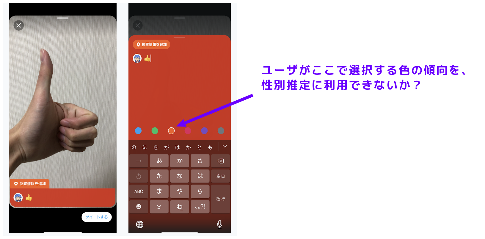
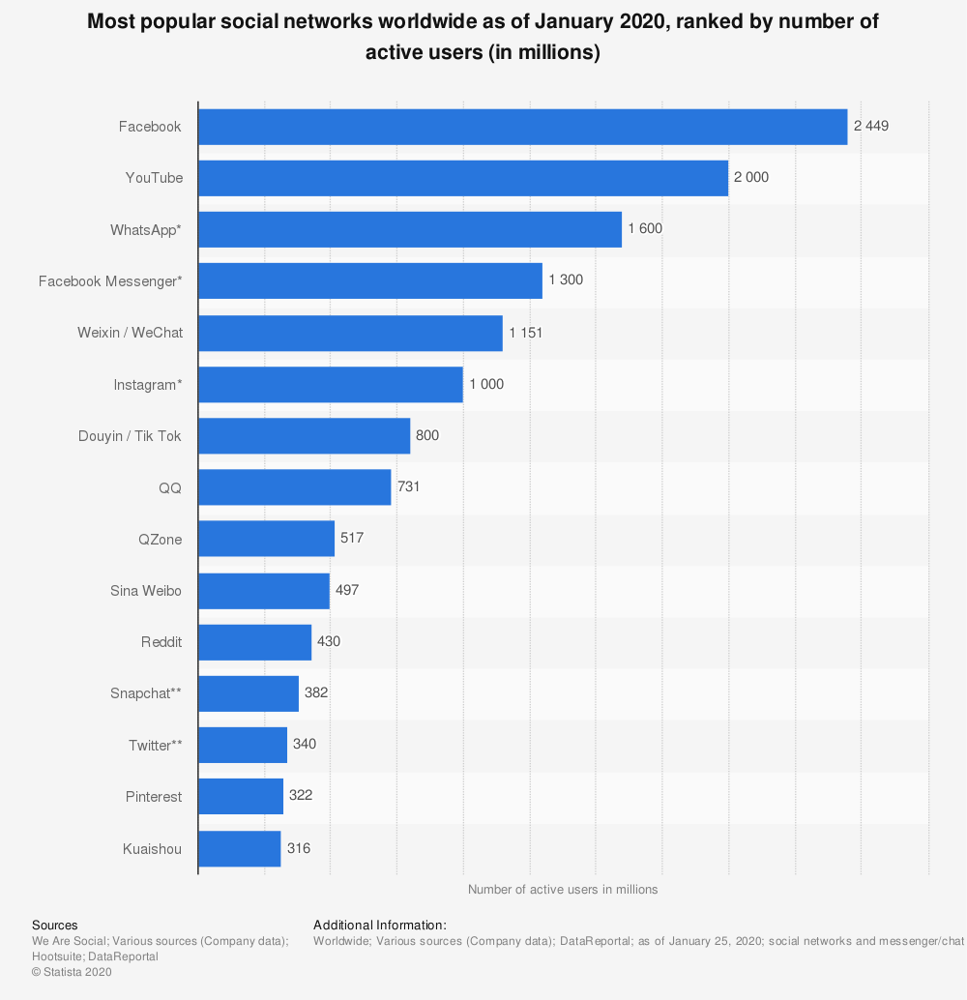

メディアツイートのキャプション背景色を利用したTwitterユーザの性別自動分類
長瀬幸翼 @ ISR Lab.
明らかにしたいこと

モチベーション
- ソーシャルメディアのユーザの性別がわかることで、ターゲティング広告や推薦に利用可能
- キャプション背景色は言語非依存 → 性別推定に有用な素性であるとすればHappy
- Twitterはソーシャルメディアの中でもトップクラスのアクティブユーザ数[1]
モチベーション - Twitterのアクティブユーザ数はとても多い

Related Works
- Twitterのプロフィールに設定するテーマカラーの傾向は男女間で異なる(Scott. 2011)[2]
- Twitterユーザがプロフィールページの背景、テキスト、リンクなど五箇所に設定した色から、
性別を自動分類するタスクを検証(Jalal et al. 2013)[3] - Twitterユーザの性別分類タスクにおいて、有用かつ言語非依存な素性を調査(Nikola et al. 2017)[4]
- ➡️ いずれの研究でもキャプション背景色は扱われていない。素性として組み込むことで精度向上？
取り組む課題
- Twitterユーザの性別自動分類タスクにおいて、
メディアツイートのキャプション背景色の情報が有効かを分類モデルを作成し検証する- Jalalら[3]は「プロフィールの背景色」のような素性１つだけでなく、
複数の素性を組み合わせることが有用であるとしているため、
他の複数の素性との組み合わせも評価する
- Jalalら[3]は「プロフィールの背景色」のような素性１つだけでなく、
取り組む課題 - 現時点での仮説
- アカウント毎のメディアツイートのキャプション背景色の傾向は、性別分類タスクに有用である
- メディアの内容に影響される（e.g. 海の写真には青を選ぶ）懸念があるが[5][6]、
選択できる色は高々6種類しかなく、個人の趣向のほうが強く出るのではと想定
- メディアの内容に影響される（e.g. 海の写真には青を選ぶ）懸念があるが[5][6]、
実験計画
- データセットの構築
- 2020/03/20 時点では、Twitter API経由でメディアツイートの
キャプション背景色を取得することはできない- スクレイピングなどで収集する必要がある
- 2020/03/20 時点では、Twitter API経由でメディアツイートの
- データクリーニング
- メディアツイートを以下の要素に分解
- メディアの色情報
- メディアに映っているエンティティ
- キャプション
- キャプション背景色
- メディアツイートを以下の要素に分解
- データ解析・素性選択・モデル作成
- 先行研究のやり方を参考にする
スケジュール
まとめ
- Twitterにおいて2016年末頃から提供されている、「アプリ内カメラで撮影した画像にキャプションとその背景色を指定してツイートできる」機能を利用した研究
- 6色のキャプション背景色の選び方の傾向を、ユーザの性別自動分類タスクの素性に利用できるのではという仮説
- 関連研究から他の複数の素性と組み合わせることが有用とされており、何を素性候補とするかを検討中
文献リスト
- J. Clement. "Most popular social networks worldwide as of January 2020, ranked by number of active users". statista. 2020-02-14. https://www.statista.com/statistics/272014/global-social-networks-ranked-by-number-of-users/, (accessed 2020-03-23).
- Fortmann-Roe, Scott. Effects of hue, saturation, and brightness on color preference in social networks: Gender-based color preference on the social networking site Twitter. 38(3), 2011, p.196-202.
- Alowibdi, Jalal.; Buy, Ugo.; Yu, Philip. Language independent gender classification on Twitter. ASONAM '13: Proceedings of the 2013 IEEE/ACM International Conference on Advances in Social Networks Analysis and Mining, 2013/08/25, p.739-743
- Ljubešić, Nikola.; Fiser, Darja.; Erjavec, Tomaž. Language-independent Gender Prediction on Twitter. Proceedings of the Second Workshop on NLP and Computational Social Science, 2017/01/01, p.1-6.
- Jonauskaite, Domicele.; Mohr, Christine.; Antonietti, Jean-Philippe.; Spiers, Peter M.; Althaus, Betty.; Anil, Selin.; Dael, Nele. Most and Least Preferred Colours Differ According to Object Context: New Insights from an Unrestricted Colour Range. 11(3), p.e0152194-e0152194.
- Lin, Sharon.; Hanrahan, Pat. Modeling how people extract color themes from images. CHI ’13: Proceedings of the SIGCHI Conference on Human Factors in Computing Systems, 2013/04/27, p.3101-3110.